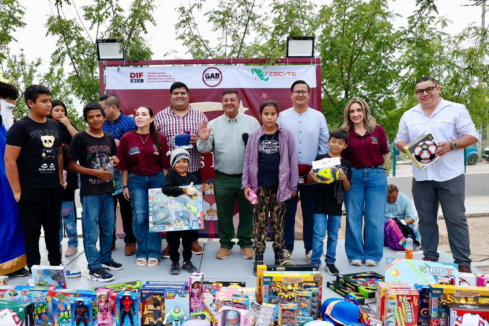
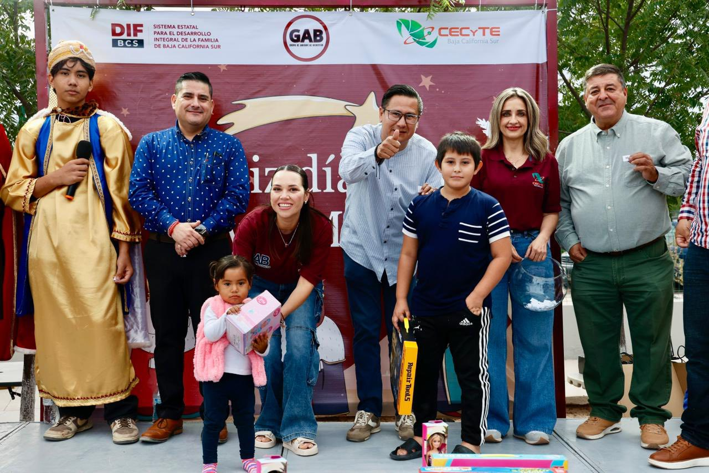
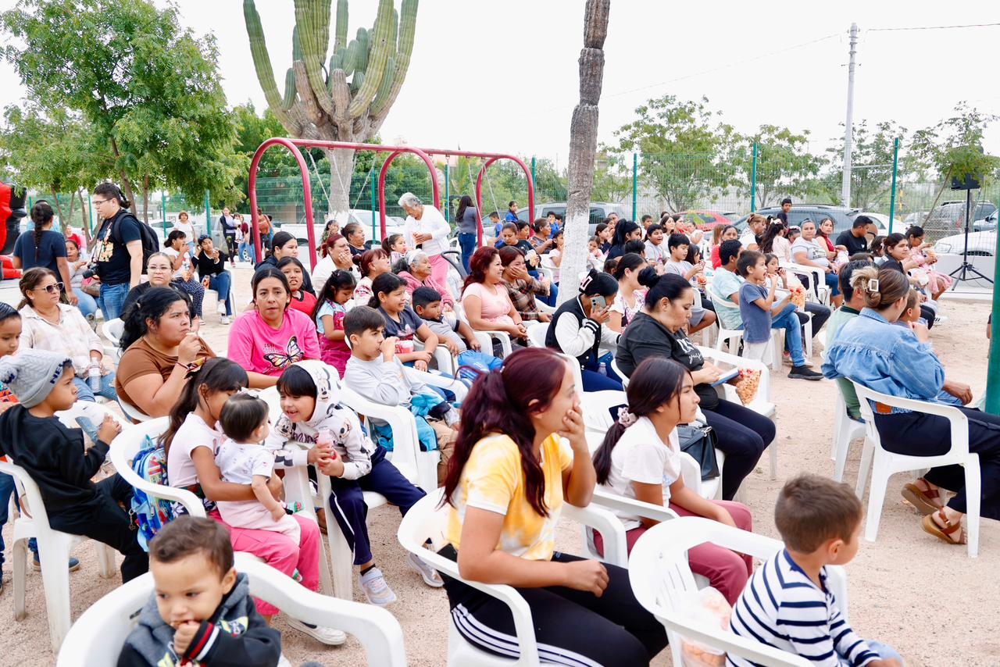

6 de Enero de 2026

El día de ayer se llevó a cabo un encuentro comunitario organizado por el Grupo de Amigos del Bienestar (GAB), coordinado por el Sistema Estatal para el Desarrollo Integral de la Familia (SEDIF), el Colegio de Estudios Científicos y Tecnológicos del Estado de Baja California Sur (CECyTEBCS) así también por el diputado del V Distrito, con el objetivo de fortalecer la convivencia familiar y social en el marco de las celebraciones del Día de Reyes.
La actividad tuvo lugar en el Parque de la Colonia Las Flores, en la comunidad de El Centenario, donde se atendió a más de 200 niñas y niños, quienes participaron en juegos, dinámicas recreativas, rompimiento de piñatas y recibieron regalos, en un ambiente de alegría, cercanía y participación comunitaria.
Al evento asistieron el Director General del CECyTEBCS, Vladimir Torres Navarro, así como el Diputado del Distrito V, Sergio Polanco Salaices, quienes acompañaron a las familias y convivieron con las y los menores durante la jornada.
En su mensaje, Torres Navarro destacó la importancia de generar espacios de encuentro que fortalezcan el tejido social, especialmente en fechas significativas para las familias. Señaló que este tipo de actividades permiten construir comunidad desde la cercanía, la convivencia y el bienestar compartido, colocando siempre a la niñez en el centro de las acciones.
Asimismo, expresó su agradecimiento a la Profra. Patricia Imelda López Navarro, Presidenta Honorífica del SEDIF Baja California Sur, por impulsar los Grupos de Amigos del Bienestar (GAB) como una estrategia que acerca apoyos, atención y actividades comunitarias a las colonias y localidades del estado, así como al Gobernador del Estado, Víctor Manuel Castro Cosío, por respaldar iniciativas que fortalecen la convivencia social y el bienestar de las familias sudcalifornianas.
Este tipo de encuentros unen a las instituciones y a la ciudadanía, creando espacios donde la convivencia, la solidaridad y el bienestar colectivo cobran sentido. Cuando la comunidad se reúne para celebrar y compartir, se construyen entornos más humanos, cercanos y llenos de esperanza para las nuevas generaciones.

